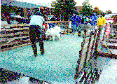
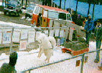
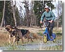

The International Weight Pull association is a non-profit association that promotes the sport of dog pulling through well organized, sanctioned events. The purpose of IWPA is to promote the working heritage of all dogs. The IWPA also promotes a program to keep your dog in good physical condition with a constructive outlet for canine competition.
Dog Pulling is akin to a tractor pull. Dogs compete to see who can pull the most weight 16 feet. They pull a wheeled cart on an earthen surface, or a sled on snow. The handler has no contact with the dog during the pull, so it is up to the dogs willingness to pull. Safety of the dog is of paramount concern. Since IWPA's organization in 1984, no dogs have been hurt in competition.

wheels and snow
L: Sam pulling at Puyallup --- R: Sam pulling at Trout
Lake
see overview of an event for blow-ups and talk-through.
IWPA was organized in November 1984 when a group of dog pulling enthusiasts saw a need for an organization to promote this specialized sport. Our season for sanctioned pulls runs from September through March. We currently sanction around one hundred pulls a season throughout the contiguous United States and Canada. Membership currently runs around 200 with around 400 dogs in competition. We are open to all dogs, mixed breed or purebred.
The objective of a competition is to see which dogs (within their weight class) can pull the most weight 16 feet within one minute. A tie is broken by the dog that pulled in the least amount of time on the preceding weight. Dogs compete within their own weight class, of which there are six: 0-35#, 36-60#, 61-80#, 81-100#, 101-120#, 121# and over.
Who can pull more - big or little dogs some busy boring graphs
Member dogs earn points based on their completion position and the number of dogs they beat. Their five best pulls are used in the total points for the season. They compete only within their weight class, and only within their region. Snow and wheeled competition are kept separate. At the end of the season, there is a pull-off and all first, second and third place dogs are invited.
We also have three levels of "Working Dog" certificates that a dog can earn for pulling certain percentages of their weight.
We have ten regions across the country, some with no activity (1,8, 10 last year, 7 except for NC). We have yet to see any involvement outside of North America; but Sweden is planning a pull in the 1999/2000 season, and we are talking with Australia. A region can cover a large area. Following is a list of regions accompanied with a map.

No region for Hawaii & no activity yet
You may travel goodly distances to enter an event. There are some around the Seattle area (where I live) but I also go to pulls in Portland, Vancouver Island and Idaho. Members will typically travel a few thousand miles a season. And, you are not restricted to pulling in your region.
Pulls are usually organized by members that have built or acquired the necessary equipment and arranged for a site; frequently donated by some pet supply industry. You can become an organizer if you are willing to put together the necessary equipment, arrange a location (and maybe sponsors) and do the paperwork. We would love to see more events, and we would love to see some activity start in other countries.
Come to one of our events and see what it is all about. Some organizers will conduct a novice pull after the sanctioned event where they will loan you a harness and give you and your dog some training.
All you need to pull is a freight harness for your dog:
One supplier is Nordkyn Outfitters in the Pacific Northwest (they ship). They also sell sledding equipment and many other fittings for working dogs.
Around Virginia, check-out http://communities.msn.com/HarnessesByCarol .
http://www.itsmysite.com/cdpits mail orders Weight Pull Harnesses, Walking Harnesses, and Treadmill Harnesses.

.
Equipment to put on a weight pull is usually homemade.
The following links (except Future Pulls) are all tables; so you may have a problem if you have a "table challenged" browser.
2001 / 2002 Season
Future Pulls -- find a pull near you.
Pulls -- Index of pulls this season with links to the pulls and standings.
Entry Status -- Status of pulls in the chain of receipt, entry and posting.
2000 / 2001 Season
Pulls -- Index of pulls this season with links to the pulls and standings.
Entry Status -- Status of pulls in the chain of receipt, entry and posting.
1999 / 2000 Season
1998 / 1999 Season
1995 / 1996 Season
Address further questions to: info@iwpa.net
(Debbie Lee & Toni Yoakam)
or Membership questions to: membership@iwpa.net
(Dixie Smith)
or Web site questions/comments to webmaster@iwpa.net
(Ron Bowser)
03 June, 2001
|
|
This Web Site Hosted by Eskimo North via Apache Server |
|
|
|
All Unix ISP with competitive rates and accessible from much of the US |
|